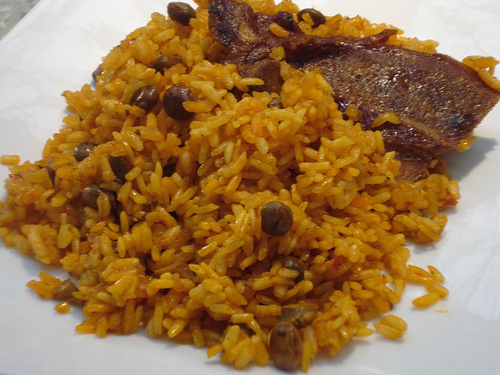

Arroz con Gandules by Portorricensis - Own work by the original uploader, Public Domain, Link
Description
Arroz con gandules is Puerto Rico’s national dish and a staple of holiday tables and family gatherings. It’s a seasoned
rice dish cooked with pigeon peas, pork (often salted pork or ham), and sofrito—a base of garlic, onion, peppers, and
herbs that gives the dish its iconic flavor. Traditionally, it’s cooked in a large caldero (cast iron pot) to get the
perfect texture with a bit of crusty rice at the bottom called pegao, which many people consider the best part.
Arroz con gandules is often served as a side dish to a meat, such as slow-roasted pork shoulder (pernil).
Ingredients
2 cups medium-grain rice
1 can gandules (pigeon peas), drained
½ cup sofrito (onion, garlic, bell pepper, cilantro, etc.)
½ cup diced ham or salted pork
3 tbsp tomato sauce
2 tbsp olive oil
3 ½ cups chicken broth (or water with bouillon)
1 tsp sazón (or annatto for color)
1 bay leaf
Salt and pepper to taste
Steps
Heat olive oil in a caldero, add pork and cook until browned.
Stir in sofrito and tomato sauce, cooking until fragrant.
Add gandules, sazón, bay leaf, and rice. Stir well.
Pour in broth, bring to a boil, then reduce to low.
Cover and simmer until rice is tender and liquid absorbed (about 25 minutes).